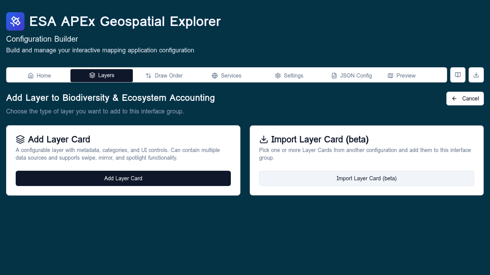
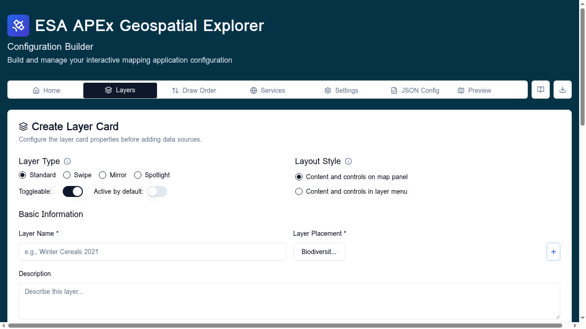

Adding layers¶
This page walks through adding a new layer to your configuration. For a conceptual overview of layers, see Layers overview.
Follow along
Screenshots on this page were taken with the Comprehensive demo config loaded.
Step 1 — Open the Add New Layer screen¶
There are two entry points:
- Layers tab → Add Layer (top of the tab) — opens the type selector with no preselected interface group.
- Layers tab → "+" inside an interface group — opens the type selector with that group preselected; the screen header reads Add Layer to <group name>.
The selector shows two tiles:
- Add Layer Card — a user-facing layer with metadata, styling, and UI controls.
- Base Layer — a background basemap (no UI). Replaced by Import Layer Card (beta) when you launched from inside a group.

Step 2 — Add Layer Card¶
Click Add Layer Card to open the layer editor. The editor is divided into sections:

Basic info¶
- Title — the label shown in the layer panel.
- Description — markdown is supported and rendered in the deployed Explorer's info panel.
- Interface group and optional Sub-interface group. Sub-groups are free text — type the same value on multiple cards to group them.
- Layer type: standard, swipe, mirror, spotlight, or time-series. The type determines how many data sources you add and how the deployed Explorer presents them.
Data sources¶
Click Add Data Source to open the Data Source form. You can add multiple sources:
| Layer type | Sources expected |
|---|---|
| Standard | One data source, optional statistics. |
| RGB composite | Three or more raster sources, one per band. |
| Swipe | Two data sources: Left and Right. |
| Mirror | Two data sources: Top and Bottom. |
| Spotlight | Two data sources: Background and Spotlight. |
| Time-series | One data source plus per-timestamp variants. |
For comparison layers (swipe, mirror, spotlight), the data source form prompts for a Position before anything else.
Visualisation¶
Pick exactly one styling tool — they are mutually exclusive:
- Colormap — for single-band rasters.
- RGB composite — multi-band raster colour mixing.
- Vector styling — rule-based fills, strokes, point symbols.
- Categories — discrete-value colour classification.
See Data visualisation for the trade-offs.
Legend, attribution, fields, controls¶
Lower sections cover legend image, attribution string, vector field labels, and UI controls (opacity slider, swipe handle, etc.). They are all optional but populating them clears Config QA flags on the Home tab.
Save¶
Click Save Layer to add the card. The Layers tab updates immediately and the new card scrolls into view.
Step 3 — The Data Source form¶
The form has two paths.
Direct connection¶
Provide a URL and pick the format. Use this when the data is a single standalone file — a one-off COG, GeoJSON, FlatGeoBuf, CSV, or XYZ template.
From an existing service¶
Pick one of the services declared on the Services tab. The form then offers:
- For WMS/WMTS/WFS — a layer/feature picker populated from
GetCapabilities. - For STAC — the STAC browser.
- For S3 — the S3 browser.
After you pick the layer, the form pre-fills the URL and any time-series or band metadata it can detect.
Statistics source¶
For COG-backed raster layers you can optionally add a Statistics source: a FlatGeoBuf or GeoJSON of zonal-statistics features. Click Add Statistics Source instead of Add Data Source to start the form in statistics mode.
Step 4 — Add Base Layer¶
Selecting Base Layer opens a slimmer form: just the data source plus a title. There is no interface group, no legend, no categories. Save and the layer appears in the Base Layers sub-section of the Layers tab.
Import Layer Card (beta)¶
Available only when you opened the type selector from inside an interface group. Clicking it opens the Donor config picker:
- Pick a donor configuration (file upload, URL, GitHub repo, or example).
- The donor's layer cards are listed grouped by their original interface group. Tick the cards you want.
- Click Import — the chosen cards are appended to the current group, bringing their data sources, styling, and metadata with them.
Imported services are added to the current config's service list if they are not already present. Duplicates are deduped by URL.
After saving¶
- Run the healthcheck to confirm the new layer reaches its data source.
- Open GE Preview to see the layer rendered in the actual APEx Geospatial Explorer.
- If the layer fails to render, double-check the data source URL, that it appears in the right interface group, and that the chosen visualisation matches the data type.